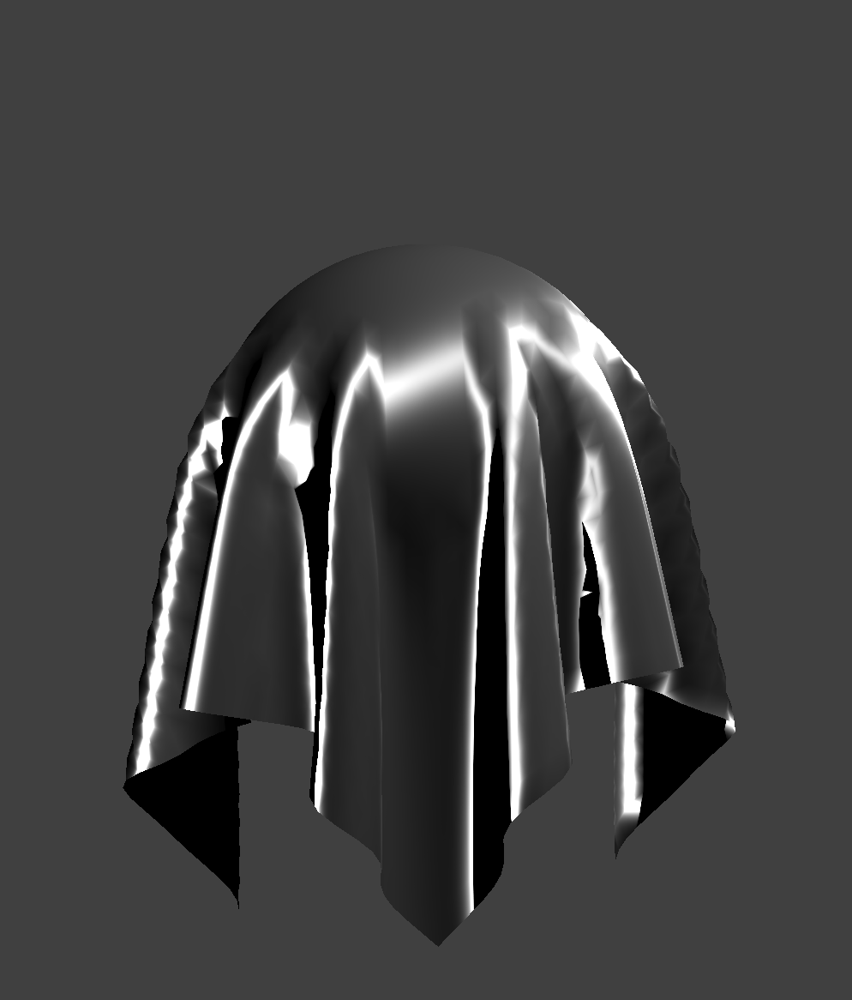

|

|

|
For our final project, we chose the project idea of “Cloth Rendering” (with a difficulty level of 2.0), where we rendered cloth materials using the shader program we learned in project 4. The main goal of our project is to create a local shading model (which is based on perceptual observation, not physics) that focuses specifically and is more fit for cloth materials; making them look more realistic (and detailed) to the human eye. We implemented two new shaders to the Project 4 rendering program: cloth and anisotropic shaders. Both shaders work as modified microfacet models with three main components: normal distribution, visibility, and diffusion. We used the same structure as the Blinn Phone model, but mostly focused on the diffusion lighting and specular lighting of the object. We also implemented a color sheen to the specular component of the cloth and anisotropic lighting to make the cloth look more sleek and realistic to the human eye.
As outlined in our abstract, in order to render more realistic textiles we chose to do so through the implementation of shaders. The beginning state of our project 4 code did a really good job of producing materials with a plastic sheen. This was due to the intensity and location of the specular component which produced a very shiny result akin to plastic coated materials. In order to produce fabrics more aligned with the visual lighting found when rendering cloth materials, like cotton or velvet, it was clear that the specular components would have to be adjusted to make it appear that more light was absorbed. Along with wanting to render cloth materials we also wanted to render textiles like satin and silk that while very shiny in nature, interact with light differently than what could be rendered using project 4 code. To render these types of textiles we landed on using an anisotropic lighting model. Which would create ring shaped specular components in the hopes that it would produce an effect similar to how light would behave with silk.
These two models: cloth and anisotropic were implemented in two separate shader frag files and utilized code from Bump.frag up until the Blinn-Phong Shading model as a starting point. By using the code from Bump the texture of the textiles was able to be rendered more realistically through lighting interactions, allowing us to overlay texture files. Both models are based on a modified microfacet model that utilizes three main parts: distribution, visibility, and diffuse, that differ based on the chosen model.
Below are some new parameters shared between the two models:

Anisotropic Model:
The anisotropic model introduces one more parameter than the cloth model.
Similarly to our Cloth model our Anisotropic lighting model hinges on three main aspects, our distribution function, visibility component and diffuse component. All of which we utilized our source material to properly define and code.
Distribution

This was our chosen distribution function, with h being the half angel and ùú∂ being our roughness parameter as defined before our cloth shader explanation. One of the key new factors in this distribution are the alpha-t and alpha-b variables. We calculated these variables according to the equations below:
In our documentation there were a few options in terms of how one could calculate the alpha-t and alpha-b values. Ultimately we chose this implementation for two key reasons: simplicity and results. Using the above definitions we were able to render very nice distinct anisotropic specular components without having to complete a plethora of operations. As our code is being done in a shader file it is vital to make sure it is as simplistic as possible in order to prevent performance issues.
Visibility
This is our visibility parameter as outlined in our documentation. With the lambda-v and lambda-t defined as:
The visibility, distribution and sheen color are multiplied together to create our specular component and then added to our diffuse, which utilizes the same code as our diffuse component in the cloth shader. Below is a visual of our diffuse + specular component that produces our final result. As you can see the sheen color plays a really interesting role in rendering the realistic looking fuschia silk.

|
|
|
|
|  | ||

|

|